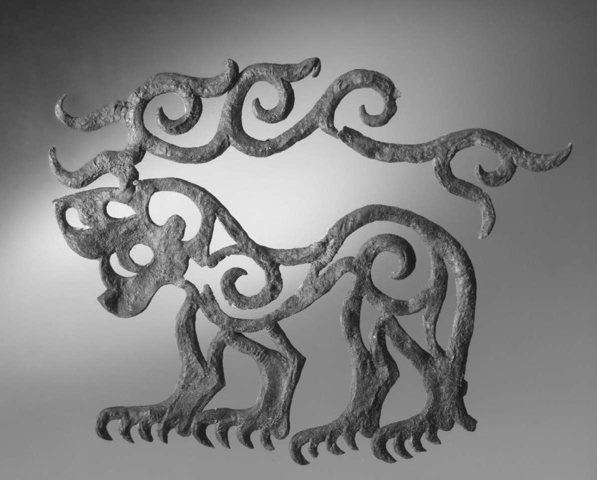

丝绸之路交流最盛的时代，就是欧亚大陆边缘的定居国家，以及欧亚大草原上的游牧联盟两者都相对集权的时代。中央集权的国家和联盟促进了贸易和外交，并投资于交流和经济基础设施（安全的道路、水站、客栈，可靠的货币制度以及标准度量衡）。他们对旅客和国民课税，收取贡品，但与遭人勒索的风险甚或沿路无数匪帮造成的更可怕的威胁相比，向少数几个大势力付钱以求一路平安，显然更加轻松和安全。本章将介绍中央欧亚历史上构成丝绸之路政治环境的主要参与者。
早期的印欧游牧民族（约公元前3000—前300年）
大约6000年前，一群农民和牧民住在黑海和里海北方那些平原上的定居点，那里如今分属于乌克兰和俄罗斯。考古学和语言学证据表明，这些人说的是原始印欧语，这是如今在欧洲、伊朗和印度使用的一个大语系的祖先，该语系包括赫梯语、希腊语、英语和其他日耳曼语、拉丁语和各种罗曼语、俄语和其他斯拉夫语、波斯语、印地语、乌尔都语等很多语种。最早的印欧人虽然不是农业和畜牧业的创新者，却靠近新月沃土 [13] 农业和畜牧业发展的起源地。何况由于居住在大草原的边缘，他们还能够获得马匹。在获得了从新月沃土经由高加索山脉传来的轮子和马车技术之后，这些原始印欧语使用者中有一部分成为最早的游牧民族。他们深入大草原，在那里遇到了不说原始印欧语的骑手和猎人，后者从他们那里借鉴并加以调整，形成了新的游牧业经济。
印欧人扩张的年表和过程仍存在争议，但从大约公元前3千纪起，说印欧语的各个族群开始向南迁移到安纳托利亚、向西迁至欧洲，随着时间的流逝，原始印欧语在各地发展出各种派生语言。包括战车在内的青铜时代的技术，在公元前2千纪进一步刺激了移民潮或征战者走出中央欧亚和北部地区。印欧语的使用者占据了波斯和印度。到公元1千纪后，被称为伊朗语和吐火罗语的印欧语分支盛行于中亚，甚至在如今的中国偏远西部地区也是如此。被称为塔吉克语的中亚波斯语至今仍然是中亚的主要语言。事实上，在现代欧洲的帝国主义以及冷战时期的美国和苏联的影响下，除中东阿拉伯国家、中国和东亚其他某些地区之外，全世界各个国家的主要或第二官方语言都是某种印欧语言。
已知的第一个大型游牧政体是说印欧语的斯基泰人（公元前7—前4世纪）。他们说一种古老的伊朗语，在西起黑海、东至蒙古阿尔泰山脉这一大片居住区域，斯基泰人呈现出极为统一的文化视野，令人瞩目。他们的墓穴是被称作坟冢（kurgan）的土墩，内有人类和马匹的遗体，还保留有各种反映动物和鸟类动态写照的饰物，其风格就是早期欧亚艺术的所谓“动物造型”。
斯基泰人的军事技能轻松超越了其他铁器时代的武装力量。阿契美尼德王朝的大流士大帝（公元前521—前486年在位）把印度西北部和欧洲东南部都纳入他的波斯帝国的版图。但大流士在进军北方与斯基泰人作战时几近崩溃。他的军力比对手强了无数倍，但让波斯人始料未及的是，游牧民族就在他们面前消失了。大流士称斯基泰统治者为懦夫；根据希罗多德所述，他的斯基泰对手回答说：“我们的国家没有城镇和耕地，如果有的话，我们的确会因为害怕失去这些或害怕它们惨遭蹂躏而仓促应战。”大流士的军需供给线过长，陷入危险，他中了中亚游牧民族最古老的计策——战术撤退，最终只好忍辱撤兵。

图3 公元前6世纪阿尔泰山脉巴泽雷克人墓中出土的虒形皮鞍饰物。斯基泰人和整个中央欧亚地区的相关铁器时代游牧民族都有这类身形壮硕的虚构“动物造型”陪葬工艺品。角枝似乎有着特殊的意义，因为马匹在入葬时佩戴着附有角枝的面具，如今常见的曲线装饰看来是起源于对角枝的描画
斯基泰人不只是畜牧者和战士；他们还监督着从顿河与第聂伯河盆地到黑海之间繁忙的贸易，甚至还向希腊人供应谷物。他们的坟冢里葬有来自遥远地区的物品，证明了当时多方贸易关系的存在。在阿尔泰山脉，巴泽雷克人的墓葬群里有丝绸、一面铜镜、一只来自中国的杯子，以及很可能来自波斯或中亚的一张扎结地毯。但斯基泰人的墓葬则以青铜、黄金、毛毡制品、兽皮和木制品，甚至还有动物造型的文身著称：食肉动物猛扑向猎物、杂交野兽，以及让人联想到加拿大马鹿叉角的曲线装饰。这种风格无处不在，证明斯基泰人的文化影响从巴尔干地区北部一直延伸到中国边境。
古典丝绸之路（公元前3世纪—公元3世纪）
匈奴崛起于现代中国北部和蒙古，时间上略迟于斯基泰人，他们所征服的领域向西远至现代的乌兹别克斯坦。他们使用的很可能不是某种印欧语言，而是阿尔泰语系中的一种语言，后来的突厥语和蒙古语都由此衍生而来。我们关于匈奴的知识主要来自中国的史料，因为中国的秦朝（公元前221—前206年）和汉朝（公元前206—公元220年）与匈奴断断续续冲突了大约350年，与这一对抗相关的事件促成了古典东方丝绸之路的开辟。公元前3世纪末，秦朝在如今的中国北部巩固势力，把匈奴部落赶向北方，驱离他们位于黄河沿岸的牧场。秦朝用“长墙”围住新近征服的领土——这就是最初的长城。
杀人不眨眼的王子冒顿在随之而来的匈奴危机中执掌大权。冒顿用鸣镝指示目标，训练他的精锐护卫，他指向哪里，护卫就射向哪里，不论对象为何人何物。他先拿自己的爱马开刀；卫队服从命令射杀了这匹马之后，又转而听命杀死了他的爱妻、他父亲的爱马，最后是他父亲本人。作为单于，即统治者，冒顿或吞并或驱走了周围的部落，袭击南方的汉朝，并夺回了此前被秦朝占据的土地。最后，汉朝皇帝被迫绥靖匈奴，派遣中国的公主和婚，每年还要向匈奴进贡20万升酒、92 400米丝绸和1000盎司黄金。
冒顿的继任者老上击溃了月氏国，那是一个强大的游牧同盟，位处包括新疆在内的中国西北部。老上把月氏王的头颅做成酒杯，月氏部落土崩瓦解，部分月氏人在公元前2世纪中叶迁徙到遥远的阿姆河北岸，也就是如今塔吉克斯坦和乌兹别克斯坦境内。与此同时，消灭月氏之后，匈奴控制了塔里木盆地（现代的新疆）的农业绿洲，从而确保了谷物、贡品和贸易收入的来源。
尽管汉朝采取了绥靖政策，匈奴仍然不时发动劫掠。将近60年后，新登基的汉武帝采取了更加激进的政策，从而开启了长达两个多世纪的汉朝与匈奴争夺塔里木盆地绿洲的战争。公元前139年，汉武帝为结盟和探知敌情，派遣一个名叫张骞的大臣出使中亚。匈奴俘虏了他，但张骞在被匈奴囚禁十年后（他还在匈奴娶妻生子），继续向西穿越中央欧亚，抵达了月氏人的牧场。
汉朝谋士们原本希望月氏人会对匈奴怀恨在心（毕竟匈奴人把他们国王的头颅做成了酒杯），并愿意与汉朝联手打击匈奴。但张骞的外交无果而终，月氏人不肯离开他们新占的领土。不过张骞最终回到汉朝时，他带回的情报大大扩展了中国人关于中央欧亚的地理、人种和政治的知识，为后来的外交和商业交流铺平了道路。例如，他说费尔干纳（大宛）培育出所谓天马的后代“汗血”宝马，刺激了中国人对这些高大、强壮的马匹的需求。而与中国后来派往中亚的外交使团结伴而来的中国商人和货物，也开启了丝绸之路上最成功的商人行会——粟特人行会长达数个世纪的运作。粟特人起初居住在撒马尔罕附近，最终从黑海到高丽都有粟特人工作和生活。
关于丝绸之路如何把距离遥远的游牧民族和定居民族及其文化融合在一起，月氏人就是一个典型例子。离开中国边境之后，月氏人和同盟部落在公元1世纪演变为贵霜帝国，这一帝国把中亚游牧民族与波斯、印度和希腊的影响结合起来，一度位处旧世界海陆商路的中枢。公元前4世纪，亚历山大大帝曾攻入印度北部和中亚。贵霜的控制范围扩展到了亚历山大大帝遗留下来的位于巴克特里亚（今天的阿富汗北部）的希腊化城邦，以及印度北部的各个王国，包括塔克西拉这个重要的贸易中心（在现代巴基斯坦主干道上，伊斯兰堡的西北方向）和更南部的马图拉。他们的影响力间或向东到达过塔里木盆地的和田与楼兰，那里曾发现以一种名为俗语的印度语言写就的贵霜文献。贵霜的钱币印有希腊或佉卢文字，伴有其各个国王，希腊、波斯和北印度诸神，以及佛陀的肖像。可靠的货币制度有助于贵霜掮客在中国、印度、波斯和终点站罗马之间运作商业往来。贵霜是佛教的大恩主，促进了该信仰通过中亚一直传播到东亚。
这是丝绸之路的古典时代，当时，地中海流域、美索不达米亚、波斯、中亚和中国都在几个帝国的中央集权控制之下。尽管汉朝和匈奴、罗马和安息人的波斯彼此敌对，战事不断——我们得知，在公元前53年发生的卡莱战役中，安息人就使用了丝制的旗帜，那是罗马人第一次见到丝绸——外交的发展和交通网络的维护仍然刺激了贸易、宗教的传播，以及整个大陆的地理知识的普遍提高。
黑暗时代？（公元3—5世纪）
1930年代，社会学家弗雷德里克·梯加特研究了罗马和汉朝之间的欧亚连接点，以及他们共同面对的边境“野蛮人”问题；他写了一本书，试图解释他研究发现的东西方历史的相关性。梯加特认为，发生在罗马东部的战争，以及野蛮人沿着多瑙河和莱茵河入侵，最终都当归因于汉朝政府采取的政策。以何种方式？通过贸易和游牧民族的迁徙。塔里木盆地的战争打断了原本经由安息的贸易，继而为罗马东部的亚美尼亚边境带来了麻烦。同样，是汉朝分裂匈奴的政策迫使其各个部落横跨大草原直抵俄罗斯，继而将出现在他们面前的其他“野蛮人”部落驱赶到欧洲的罗马帝国北方边境。
梯加特的论题是“大历史”的勇敢尝试：超越单一国家乃至帝国，从全局考察世界历史。丝绸之路当然适用于宏观分析。此外，梯加特关于全球联系的灵感或许源自他在自己的时代亲身经历的第一次世界大战和美国的经济大萧条。梯加特的研究有些过于野心勃勃了：他无法证明他所谓的相关性不仅仅是巧合而已。公元1世纪的奢侈品贸易被中断的后果也无法真正与现代的贸易保护主义相提并论，因为在大多数旧世界经济体，国际贸易的经济价值微不足道。然而东西方的相似性的确十分醒目，而游牧部落的机动性如此之高，以至于大陆一端的重大军事或政治活动想来一定也会影响到另一端。
一个有趣的关联就与“匈奴”有关。“匈”这个汉字和“Hun”这个英语中对“匈奴”的拼法在语音上有关联。一封讨论公元316年一次匈奴袭击的粟特人信件把这个游牧民族的名字拼写成xwn——也就是Hun。那么，匈奴人是否就是在公元4和5世纪在黑海大草原建立了一个帝国，入侵欧洲北部，并很可能触发了“野蛮人”迁入欧洲的时代的那些Hun人的祖先呢？没有证据表明二者存在直接联系，但在Hun联盟主要说日耳曼语的人群中，匈奴人的后裔可能形成了统治精英。或者这个名字本身就是被吸收进来的外来语，就像“斯基泰人”或“鞑靼人”成为对中央欧亚游牧民族的通称一样。
日耳曼人和其他民族对欧洲的入侵，与西罗马帝国从公元3世纪左右开始衰败、一直到5世纪最终灭亡有关。公元220年，汉朝灭亡，随后中国北部政治动荡的几百年正是“野蛮”民族进入原汉朝领土并建立国家的时期。直到最近，习惯上人们一直认为，中国这几百年时间就像罗马之后的欧洲一样，属于黑暗时代，但这种说法未免夸张。首先，拜占庭和波斯的力量还很强大，中国北部的一些国家也是如此，特别是拓跋氏的政权或北魏（386—534），控制中国北部大部分地区长达一个多世纪，且尽管采纳了中国的制度并击退了其他游牧民族的攻击，它们仍然保持着与中亚的密切联系。
实际上，这是一段创新和杂糅的时期，因为新的征服者和迁徙者采纳并改造了古典社会的制度。基督教在欧洲和拜占庭得到传播并确立下来；在中国，北魏等昔日的游牧政权积极宣传佛教和其他印度文化，开启了印度文明对中国文明长达一千年的孕育过程。正是在这个时期，中亚和中国的石窟和大规模的佛教摩崖造像完成或开工了，包括巴米扬大佛、克孜尔千佛洞、莫高窟（敦煌）、炳灵寺石窟以及云冈石窟。（龙门石窟虽与这些造像风格雷同，却是在稍后的7和8世纪期间雕刻的。）
关于欧洲和中国史上的“衰退”和“黑暗时代”比喻还让很多人误以为，公元3世纪到6世纪期间，整个丝绸之路也日显式微。但这就等同于认为统一的汉朝和西罗马帝国之间的接触是丝绸之路的唯一重要目的。实际上，欧亚网络中段的交流仍十分活跃。在塔里木盆地，基本自给自足的绿洲因为农业和远距离贸易而蓬勃发展，其中很多贸易此时都转而由粟特商人经手。在庙宇聚集之处，包括塔里木盆地的龟兹和位于中国通往中亚的沙漠路线上的敦煌，印度、中亚和中国的佛教僧侣翻译了大量佛教经典。贵霜国王们在3世纪中叶仍然强大，那以后，他们作为丝绸之路巴克特里亚中枢的地位被一个新的部落联盟——嚈哒人 [14] ，或称白匈奴人——所取代。嚈哒人与粟特商人订约，往返波斯售卖丝绸和其他奢侈品，彼时波斯正是萨珊王朝统治（224—651）下的黄金时代。萨珊王朝统治着波斯、印度北部，以及河中地区（中亚）阿姆河（奥克萨斯河）以北曾属于阿契美尼德王朝和亚历山大帝国的领土，就这样，波斯人控制了陆上和海上丝绸之路贸易的纽带。
中世纪的世界大同（6—10世纪）
到公元1千纪的中期，丝绸之路上最活跃的集大成者是说着各种伊朗语的人：萨珊王朝的商人不但在波斯湾附近，也在阿拉伯海、非洲东部沿岸、印度海岸和斯里兰卡，以及远至马来西亚和中国南部，支配着海上贸易。波斯商人居住在广州的特定区域——那时广州就已经是一个出口城市了，直到今天也是一样。粟特商人则从陆路出发，前往亚美尼亚，遍布中亚，穿过中国北部，最远到达过中国东北地区和高丽。正是因为这些商人群体的支配地位，才让波斯语成为丝绸之路商业和交流的通用语，特别是在向南延伸的路线上，甚至在阿拉伯人征服了波斯和中亚之后也仍然如此。
从6世纪中叶开始，一个新的游牧联盟崛起于中国北部。突厥人说阿尔泰语，据说他们曾在另一个游牧国家从事铁匠的营生，后来部落精英造反，攫取了政权。（“突厥”这个名字本身的传播就是一个丝绸之路现象；现代国家土耳其得名自中世纪走出蒙古的突厥人，但如今的人口组成更加多样化。最早的突厥人看上去很像如今的蒙古人、哈萨克人和柯尔克孜人。）突厥人吞并了周围各部落，为自己取了“突厥”这个有政治意义、后来又有了民族意义的名字。
突厥的东西汗国统治的疆土从蒙古一直扩展到南方的巴克特里亚，在那里取代了嚈哒人，控制了原本被运往萨珊波斯的丝绸，向西的控制范围则越过了里海。突厥的势力起伏不定，联盟支离破碎，突厥汗国最终也被唐帝国用计征服。然而突厥部落同样影响了中国的唐朝，特别是在军队编制方面。即使在汗国崩溃之后，向西迁徙的突厥部落使得说突厥语的人占据了中亚，继而形成了好几个在欧亚历史上举足轻重的国家，它们都保持了“突厥”的特点，并将其传播到整个欧亚大陆。这些突厥的继承者包括蒙古疆域内、吐鲁番附近的回鹘汗国（744—840），以及后来的一系列向波斯化伊斯兰国家提供军事力量和王朝精英的强大政权：喀喇汗国（999—1211）、伽色尼王朝（975—1187）、塞尔柱帝国（1037—1194）、马穆鲁克（1240—1517）、德里苏丹国（1206—1526），甚至还可以把奥斯曼（1299—1923）、帖木儿（1370—约1500），以及莫卧儿（1526—1858）诸王朝也加到这一突厥——伊朗——伊斯兰统治者的宽泛类别里，他们分别在这个地区的不同疆域统治了将近一千年。在中亚、南亚和西南亚有如此众多的主要国家享有共同的政治背景和精英文化，这成了丝绸之路连通性的一个重要因素。
从7世纪到10世纪，另一个突厥继承者建立的国家——可萨汗国，占领了北高加索和黑海大草原——这是黑海和里海、拜占庭，以及萨珊和后来各伊斯兰帝国之间的一个主要贸易枢纽。从伏尔加河流域经过可萨领土抵达拜占庭和地中海的产品包括毛皮、蜂蜜和奴隶等。可萨汗皈依了犹太教，这大概是受了犹太商人或因不信波斯国教祆教而被逐出波斯的流亡者的影响。西突厥汗国的首都虽远在东部，位于如今吉尔吉斯斯坦境内的楚河河谷，但从6世纪中叶起，它也与拜占庭宫廷建立了密切的外交和商业关系；一位出使突厥的拜占庭使节就曾留下过一份关于西突厥宫廷壮丽外观的详细记录。
为了不再仰仗萨珊波斯作为绢丝来源，拜占庭接触了东部丝绸之路。除致力于开启与突厥人的直接陆上贸易之外，拜占庭还鼓励埃塞俄比亚商人从海道绕过波斯，从印度直接供给生丝。拜占庭发展了自己的纺织工业，把进口的生丝织成纺织品，并从6世纪中叶开始尝试发展养蚕业，自行供应丝线。在丝绸之路沿途各处，绸缎都承担着超越经济的政治价值，特别是作为君主之间的礼品或贡品。在拜占庭尤其如此，那里禁止奢侈的法律阻止了丝绸的出口，并限制向皇家和高级神职人员供应绸缎。最受限制的是那些染成深紫色的纺织品，颜料取自腓尼基港口提尔出产的海螺。
这一时期，中国再次统一，先是隋朝（589—618），继而是唐朝（618—906）。唐朝是中国历史上灿烂辉煌的朝代，不光统治时间长，也开疆扩土，幅员辽阔。唐朝在如今的新疆东部和北部建立了农业殖民地，还设立了很多临时军事哨所，最远到达伊朗。唐朝与突厥之间密切而复杂的关系及其挺进中亚，都促成了它的世界大同主义：当时唐朝的都城长安（今西安）定居着来自波斯、印度，以及中亚、东南亚和东北亚的各个僧侣和商人团体，包括基督徒、佛教徒、摩尼教徒和穆斯林。在唐朝前半段，中国人欣然接受来自广阔世界的各种物品和文化，胸襟之开阔前所未有，其后数百年亦无人望其项背。像此前的汉朝一样，唐朝还是东亚其他地区的文化源泉：汉语、文学、哲学、音乐和政治制度的方方面面，都在日本、高丽和越南等国留下了深深的烙印。某些在这个时期扩散到东亚的“中国”文化本身就是丝绸之路互动的产物——其中最主要的是佛教，但远不止于此。7世纪的一座高丽王陵就是以中国皇陵的风格设计的，依山为陵，进入的“神道”两侧竖立着石雕守卫，其面部特征和穿着与粟特人和回鹘人一致。唐朝传到东亚其他地区的不仅仅是中国文明，还有丝绸之路的文明。
也正是从7世纪起，阿拉伯人——另一个游牧部落民族——出现在沙漠边缘，征服了昔日罗马和波斯帝国的大部分地中海和波斯领土。他们迅速扩张，就像九个世纪之前的亚历山大一样，因为他们有能力取代那个建立已久但风雨飘摇的政权：萨珊帝国。但阿拉伯人带来了伊斯兰教这个强大的宗教和政治意识形态，将对丝绸之路产生巨大的影响。特别是在经历过第一次朝代变迁，公元750年从伍麦叶哈里发国转变成阿拔斯哈里发国后，伊斯兰世界的地理扩张远远超出了阿拉伯领土，笃信该宗教的也远不止阿拉伯民族。毫不奇怪，伊斯兰帝国从波斯和阿拉伯人称之为“马维兰纳赫尔”（Mawara’n-nahr）——意即“（阿姆或奥克萨斯）河对岸之地”，也就是河中地区或粟特地区——那里吸收了波斯行政管理和政治风格的很多方面。波斯东部和粟特地区起初奋力抵抗，后来还是被并入了泛伊斯兰世界的版图。的确，从9世纪到13世纪，布哈拉是伊斯兰最重要的艺术和知识中心之一。
于是在这一中期，当时的几个欧亚帝国开始直接与彼此接触。突厥汗国和各个突厥继承国、拜占庭、头几个萨珊波斯王朝以及后来的各伊斯兰哈里发国，它们接壤的边境虽时有冲突，但商业贸易频繁，外交往来不断，还相互赠送礼物。吐蕃也成为其中的一个王朝，从它所在的高原向塔里木盆地、青海、中国西部其他地区和中亚扩张势力，从7世纪末到整个8世纪，它与唐朝都处于敌对状态。
这些帝国组成的庞大集群使得唐朝——其军队主要由突厥人组成——直面在中亚不断扩张的伊斯兰帝国的阿拉伯人、波斯人和突厥人军队。唐朝大将高仙芝（高丽人）征服了塔什干城，洗劫全城并杀死了国王；国王之子去向当时驻扎在撒马尔罕的伊斯兰军队求援，公元751年，唐朝与阿拔斯的军队在怛逻斯（塔拉兹）河遭遇。唐军战败，但此战并无多大的战略意义。（中亚和塔里木盆地的伊斯兰化是延续数个世纪的过程，并非由此事件触发。唐朝军队被迫从中亚撤回，原因并非怛逻斯一役，而是公元755年，粟特与突厥混血将军安禄山叛乱，直逼都城。）然而，怛逻斯战役在丝绸之路历史上有着突出的地位，因为中国的战俘可能将造纸术引入了撒马尔罕，该技术从那里经由伊斯兰的领土，最终传到了欧洲。
蒙古人的世界帝国（13—14世纪）
21世纪初，成吉思汗（1162?—1227）的形象已经从嗜血的野蛮人被重塑为一个具有全球视野的人。如今的蒙古民族主义者鼓吹说公元1206年，也就是《大宪章》签订的九年前，把铁木真选为成吉思大汗的部落集合是一次民主磋商会议，这是可以理解的。但西方作者们赞颂成吉思汗开启了文艺复兴，或将他与耶稣相提并论，这些说法着实令人踌躇。
为什么要如此彻底地为成吉思汗正名？一位学生在考场作文里写下的一句话道出了原因：“1206年，成吉思汗开启了当时世界的全球化过程。”这句话的写作者或许无心幽默，但当时的蒙古人也会致力于——正如史密森学会总结的丝绸之路的重要意义——“连接文化，建立信任”吗？
蒙古人以前声名欠佳是事出有因的。铁木真是蒙古部落孛儿只斤氏排行居中的儿子，是个富有领袖魅力的人，他在征服其他几个争夺蒙古霸权的部落之后才成为汗。在集权和重新组织部落社会后，铁木真——如今称作成吉思汗——在中国北部和中亚征战20载。他的儿孙最终把蒙古的统治扩展到中国其他地区、吐蕃、伊朗、伊拉克，以及俄罗斯大部分地区，建立了一个由四部分组成的帝国，包括中国和吐蕃的元朝、中亚的察合台汗国、波斯和西南亚部分地区的伊儿汗国，以及黑海北部和伏尔加河沿岸大草原上统治着基辅和莫斯科的金帐汗国（钦察汗国）。
与此前和此后的其他强盛政权一样，蒙古人为了战略目的而使用极端暴力，将所到之处夷为平地以儆效尤，他们早期征战中亚时尤其如此。乌萨马·本·拉登曾把当时的美国副总统迪克·切尼比作成吉思汗的孙子旭烈兀，他知道听众一下子就能抓住要点：旭烈兀因种种罪行在伊斯兰世界恶名昭彰——他杀死了哈里发、毁掉了灌溉基建设施，还洗劫巴格达长达17天；底格里斯河先是被这座城市著名图书馆的墨水染黑，后来又被鲜血染成红色。
然而尽管蒙古人滥用暴力，从其实际意义上来说，蒙古帝国的确前所未有地统一了欧亚大陆。这个统一体好景不长。中亚充斥着蒙古人自相残杀的倾轧，到14世纪中叶，中国和西南亚的蒙古政权先后崩溃；金帐汗国在15世纪初分裂，只有小型的继承汗国存留到公元1500年后。然而在帝国鼎盛时期，蒙古人所统治的领土是以统治者的家族纽带联系在一起的；他们有一套公函的马上递送体系（yam），共享行政、司法、税收和财政制度，并在国土的各个地区，特别是在元朝和伊儿汗国之间，调度技术专家和工匠，在整个蒙古帝国期间，这两个国家的关系一直很友好。从中国到黑海各港口，继而转向欧洲的大草原这条路线相对安全，成为除穿越伊斯兰国土的路线之外的另一个经济可行的选择：1257年，法国香槟地区集市上有中国丝绸纺织品出售，价格低于波斯出产的丝绸。就像十字军让北欧和西欧知道了伊斯兰世界一样，蒙古帝国也向欧洲传教士和商人打开了中亚和中国的大门。在那些蒙古帝国时期一路远行到Cathay（他们对中国的称呼）的西方商人中，只有马可·波罗一人记录了自己的旅程。1298年，他在热那亚的监狱里向一位意大利传奇小说家口述往事，结果，他的亚洲地理被这位作家添油加醋之后，不但成为了解东方的一个窗口，还刺激了更为深远的探险：哥伦布在驾船驶向他所以为的中国时，就随身携带着马可·波罗《行记》的注释本。
包围大草原（16—19世纪）
因为蒙古帝国以前所未有的力度促进了欧亚大陆的联系，某些学者认为，那个时期就标志着现代世界的肇始。这么说未免夸大其词，但显然，除了加强丝绸之路的交流之外，蒙古人在欧亚大陆的政治和社会都留下了深深的烙印。大草原和耕地上后来的统治者们在军事、行政和帝王风范等诸多方面都继承了蒙古人的传统。特别是蒙古人不再像早期的游牧帝国那样单纯仰赖榨取，转而依靠系统性的赋税而不只是靠农耕地区的掠夺物和贡品，建立了一个游牧和定居政权的混合体。后蒙古时期的继承国也遵循了这一模式。
在蒙古人统治数百年后的大部分疆土上，皇室正统仍是成吉思汗的后裔：只有拥有成吉思血统（Chinggisids）的人，或成吉思（Chinggis）的后代，才可以使用“汗”这个称号。再次征服了西蒙古帝国大部分土地的帖木儿（1370—1405年在位）自称埃米尔（amir，意为亲王）和“女婿”，因为他本人并非出身成吉思血统的部落，只是娶了一个成吉思血统的女人。他自己的继任者们不再那么穷兵黩武，但仍保留了蒙古人的基业。整个15世纪，在帖木儿的继承人的统辖之下，中亚、波斯和阿富汗的文化繁荣发展，集伊斯兰、波斯和突厥文化之大成，并在科学（特别是天文学）、突厥和波斯文学、彩饰手抄本、陶瓷、石雕以及建筑等领域取得了卓越成就，建筑上的成就尤其辉煌：撒马尔罕和赫拉特的大清真寺和宗教学校都建于这个时期。帖木儿王国的这次文艺复兴影响了塔里木盆地的绿洲城市、波斯、奥斯曼帝国，乃至印度。
印度莫卧儿王朝（1526—1757）的缔造者巴布尔是中亚人，拥有帖木儿和成吉思两系的血统，但他更崇尚自己的帖木儿祖先，即使在征服印度之后，他仍然心系阿富汗与河中地区。莫卧儿帝国算是蒙古和帖木儿的继承国，移居到了欧亚大陆的边缘地带，但欧亚大陆边缘的其他非游牧国家也学到了突厥——蒙古传统的方方面面。伊朗的萨菲王朝（1501—1722）和奥斯曼帝国（1299—1922）都把部落的游牧军事力量和对农耕人口进行的官僚统治相结合。加上莫卧儿王朝，这三个国家常被称为火药帝国，认为它们之所以能够把军事力量和基于农业的后勤能力结合起来，是因为在军队中推广了火药武器，相应地带来了人员、防御工事和财政组织的变化。但除了火药之外，它们还受到了欧亚大陆游牧型帝国的影响。就此而言，还有一种类似的观点把中国的明朝（1368—1644）也算在其中：明朝虽然仇视蒙古人的统治，却保留了蒙古军队组织的很多特征，它建立之初的几十年在大草原和海上都积极扩张，并与中亚保持着外交和商业关系。
就连莫斯科的沙皇俄国（1547—1721）和俄罗斯帝国（1721—1917）也可被视为蒙古人的继承者，清帝国（1636—1911）也是如此。这两个帝国最终都击败了后蒙古时期中央欧亚的部落民族和汗国，并把这些地区各自的部分纳入自己广阔的帝国版图；此外，两个帝国也都以蒙古人的方式把对农业和畜牧民族的统治结合起来，只不过他们的行政效率、交通所及和执政寿命都超过了蒙古人。从一种角度来看，这导致耕地人群对大草原人群复仇，在两千年后实现了一次势力天平的大反转。但这两个包围了大草原的近代帝国本身既是大草原传统的继承者，也是定居帝国的接任者。
俄罗斯帝国除继承了拜占庭和东正教传统之外，还采纳了蒙古人的一系列具体做法和制度，包括某些税赋、军事装备和战术，以及基于蒙古人的yam建立起来的驿道系统。除了这些显而易见的延续之外，我们还可以看到，自15世纪中叶以来将强大的中央统治权集于大亲王、沙皇或皇帝这一传统有了新的发展。沙皇俄国的意识形态并不直接源自中央欧亚：“沙皇”（tsar）一词的词源是“恺撒”（Caesar），延续了拜占庭人把世俗和宗教的最高权威集于君主一身的传统，俄罗斯人把蒙古可汗也称为“沙皇”。而皇帝蒙神施恩的概念与中央欧亚地区天降可汗的传统完美契合——在这一点上与中国的“天子”概念如出一辙。此外，俄罗斯的沙皇明显采纳了可汗制的模式，与哈萨克人和其他中央欧亚部落民族保持着世袭的统治关系。在中央欧亚的人看来，俄罗斯君主就是“白可汗”。
清朝确实是蒙古的继承国，不仅因为它自己的部落建国者——满族人——一直保持着与蒙古部落贵族的密切关系并相互联姻，也因为它在与蒙古和中亚（它从蒙古统治者手中接管的地区）的非汉民族打交道时，有意识地利用了成吉思血统的正统地位。清朝的皇帝们在与中央欧亚的人交流时标榜自己是“神圣可汗”，并且和他们之前的元朝大汗们一样，是藏传佛教的大恩主。除使用这些意识形态手段之外，清朝还依靠在中国收取的巨额农业和商业税赋，在大草原上部署骑兵，彻底消灭了准噶尔（另一个有帝国野心的蒙古联盟）。这些征服使得20世纪的中华人民共和国比16世纪的中国明朝的版图扩大了一倍。
而蒙古帝国之后的丝绸之路情况怎样？它看上去当然与古典时期、中世纪，甚至蒙古时代不同了。清朝消灭了准噶尔人之后，再也没有来自大草原的游牧帝国占据中央欧亚的“中间地带”了。相反，在16世纪和17世纪，俄罗斯人穿越西伯利亚，向太平洋和清朝的北部边境进军，为满足世界市场的需求寻找毛皮，并为俄罗斯和欧洲寻找茶叶。到17和18世纪，俄罗斯人对棉纺织品和印度人对马匹的需求，推动了经由中亚的庞大贸易，塔什干等传统的丝绸之路货物集散地都是受惠者。清朝向西扩张，进入新疆，把中国人和中亚商人凑在一处，茶叶、大黄、陶瓷、白银和丝绸在帝国边境上自由流动。与丝绸之路历次鼎盛时期一样，近代的中央欧亚帝国统一的结果，也是在俄罗斯、印度、波斯、中亚和中国之间促成了更密切的联系、更庞大的共有知识体系，以及更繁荣的贸易往来。